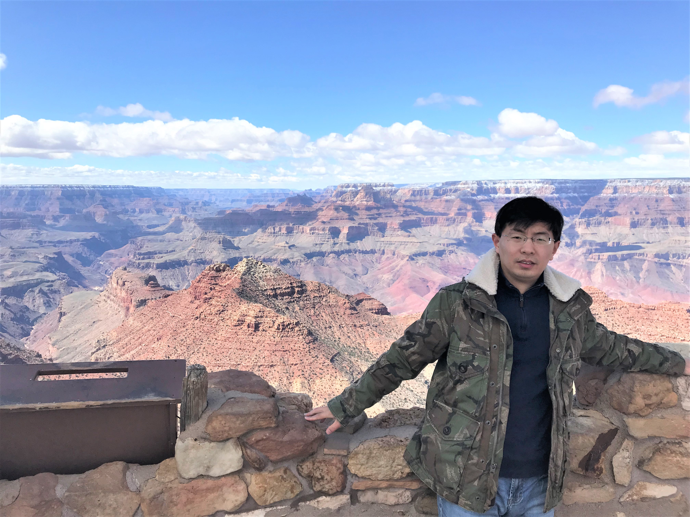

|
Huashan Chen
|
 |
Ph.D.,
Department of Computer Science,
The University of Texas at San Antonio (UTSA)
Email: huashan.chen@utsa.edu
1 UTSA Circle
San Antonio, TX
USA, 78249
|
About me
I received the B.S. and M.Sc. degrees in Computer Science from Shandong University, and the Institute of Information Engineering, Chinese Academy of Sciences, in 2012 and 2016, respectively. In October 2021, I received the Ph.D. degree in Computer Science under the supervision of
Prof. Shouhuai Xu and Prof. Ravi Sandhu at the University of Texas at San Antonio.
Research
My research interests include
Find out more.
Recent Publications
E. Ghadimi, H. R. Feyzmahdavian, and M. Johansson, "Global convergence of the heavy-ball method for convex optimization", In ECC’15: European Control Conference, 2015.
E. Ghadimi, A. Teixeira, I. Shames, and M. Johansson " Optimal parameter selection for the alternating direction method of
multipliers (ADMM): quadratic problems ", IEEE Transactions on Automatic Control, 2015. [arxiv]
E. Ghadimi, A. Teixeira, M. Rabbat, and M. Johansson, "The ADMM algorithm for distributed averaging: Convergence rates and optimal parameter selection", In Proceedings of the 48th Asilomar Conference on Signals, Systems and Computers, 2014. [pdf ]
E. Ghadimi, O. Landsiedel, P. Soldati, S. Duquennoy, and M. Johansson, "Opportunistic Routing in Low Duty-Cycle Wireless Sensor Networks", ACM Transactions on Senor Networks, 2014. [pdf]
Full list of publications.
A brief cv.
|